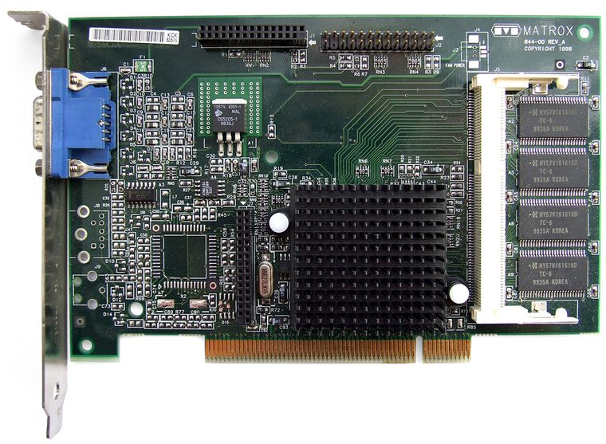

[ EARLY 2D AND 3D ACCELERATORS // IDENTIFIED COMPONENT ]
Matrox Millennium G200 8 MB PCI
G200 2D/3D graphics processor, 1998. This entry identifies one specific product configuration; closely named models and partner-board variants are distinguished below.

MODEL IDENTIFICATION: Millennium G200 is a family. Do not infer PCI bus, 8 MB memory, or connector set from chip name alone; G200 MMS and OEM variants differ.
Recorded specifications
| Cataloged product | Matrox Millennium G200 8 MB PCI |
|---|---|
| Generation / chip | G200 2D/3D graphics processor, 1998 |
| Core & memory | Matrox G200 graphics engine; 8 MB SGRAM on specified Millennium G200 PCI board; 2D acceleration and hardware 3D support. |
| Host interface & I/O | 32-bit PCI card with analog VGA output; G200 boards also existed in AGP and other memory/output configurations. |
| Variant boundary | Millennium G200 is a family. Do not infer PCI bus, 8 MB memory, or connector set from chip name alone; G200 MMS and OEM variants differ. |
| Archive record | Photograph label and PCB revision; record BIOS, driver version, adapters, physical condition, and source-document revision used to verify specimen. |
Compatibility & service notes
Specifically 8 MB PCI Millennium G200 desktop card, not G200 MMS multi-display or AGP model.
Check card label and PCB number; use matching Matrox driver and BIOS. Preserve monitor adapters. Inspect edge connector and memory packages for corrosion or heat damage.
- Check slot signaling, keying, lane width, auxiliary power, clearance, and PSU requirements; physical insertion alone does not prove compatibility.
- Use drivers supporting this device ID and OS release. Preserve original driver/firmware before updates and record source.
- Do not energize cards with cracks, corrosion, damaged power sockets, obstructed fans, or suspected shorts; inspect before bench testing.
Manufacturer & standards sources
- Matrox Millennium G200 product archiveUse alongside the exact board label and revision; archived family data may not describe every OEM implementation.
- PCI-SIG PCI interface standardsUse alongside the exact board label and revision; archived family data may not describe every OEM implementation.
- Matrox G200 board referencesUse alongside the exact board label and revision; archived family data may not describe every OEM implementation.
Specifications describe the cataloged reference configuration only. Manufacturer manuals and physical product label take precedence for a specific OEM revision.